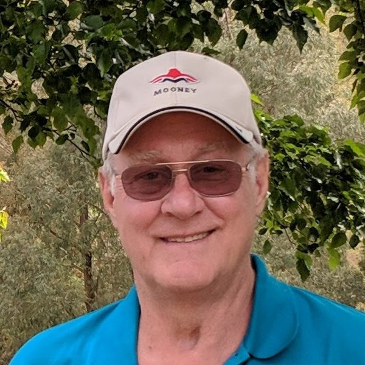
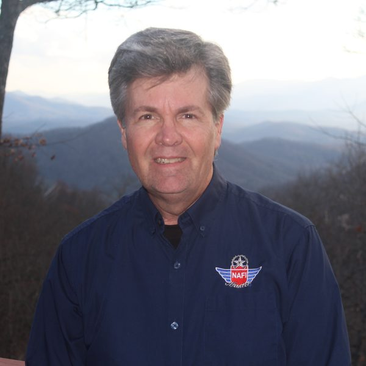
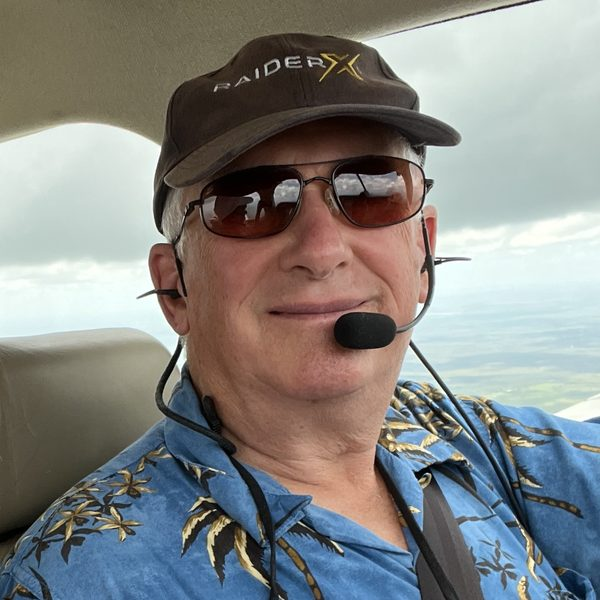
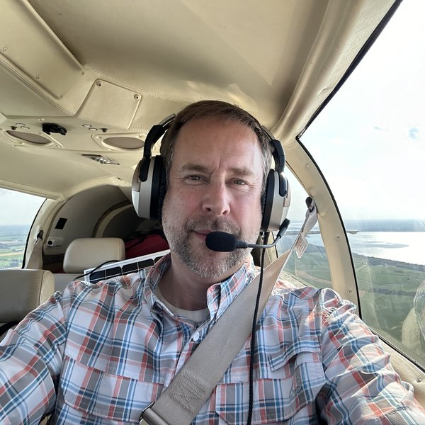
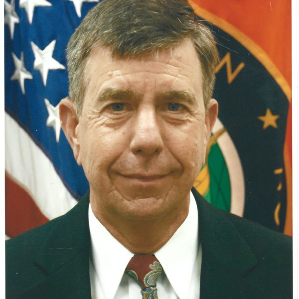
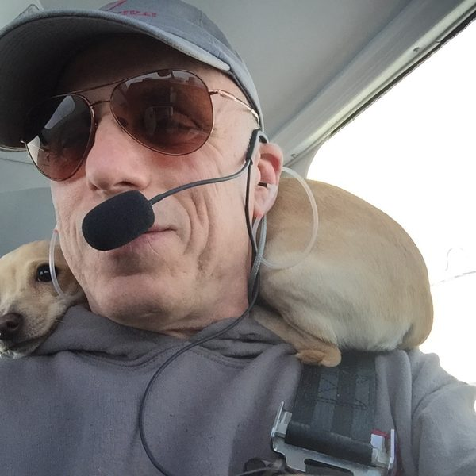
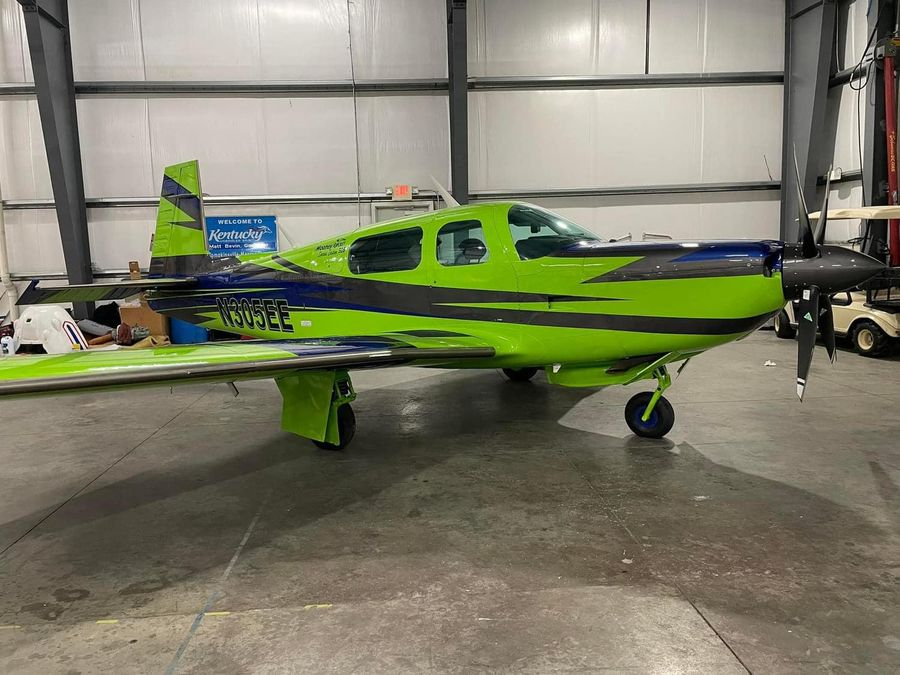

Mooney Pros instructors
Mooney Pros has six Mooney-specific flight instructors. Mooney Pros instructors were vetted by Mooney International until the factory shut down. Mike Elliott now vets any new additions using the same high standards set forth by Mooney International. Between us we cover short-body, mid-body, and long-body Mooneys, turbocharged and normally aspirated, plus the G1000-equipped Acclaim and Ultra models. We match you with the instructor who best fits your airplane, your location, and the way you learn.

Mike Elliott, CEO and founder
Tarpon Springs, Florida · CFII · Master Instructor (Master Emeritus) · FAASTeam Lead Representative · 3,300+ Mooney hours
Mike Elliott is the CEO and founder of Mooney Pros, Inc. He has amassed 3,300+ hours in Mooneys and was tasked with providing transition training for Mooney International’s new Ultra Acclaims and Ovations (that factory program is past tense). He was a founding pilot of Honor Flight and co-founder of the Mooney Summit. He is a Master Instructor LLC 6-time Master and Master Emeritus. He specializes in the G1000 long-body Mooney Acclaim and Ovation airplanes.
Mike co-founded the Mooney Summit in 2014 to “better the breed” of Mooney pilots, and he founded the Bill Gilliland Foundation in 2015. He has written for The Mooney Flyer.
Mooney hours: 3,300+.

Sam Lindsay
Smoky Mountains, North Carolina · CFI / CFII / MEI · 3-time NAFI Master Flight Instructor · FAA Safety Team representative
Sam Lindsay is a Mooney Pros flight instructor located in the Smoky Mountains of North Carolina. He is an Air Force veteran and former first officer for Continental Airlines. Lindsay specializes in Mooney and also does Van’s Aircraft training and transitions throughout North America. He has been instructing since 2001 and has accrued 6,300 hours of flight time in his 30-year career. Sam is a 3-time NAFI Master Flight Instructor and an FAA Safety Team representative.

Rob McGuire
Hawthorne, Florida · ATP · flight instructor · A&P with Inspection Authorization
Robert J. McGuire is a Mooney Pros flight instructor and an aviation professional with more than 10,000 hours of flight time, including over 8,000 hours in Mooney aircraft. An ATP, flight instructor, and A&P mechanic with inspection authorization, he has broad experience across Mooney models and a strong commitment to pilot proficiency and safety.

Dan Bass
Winona Municipal Airport · CFI · Mooney transition and recurrent
Dan Bass is a Mooney Pros flight instructor based at Winona Municipal Airport. A private pilot since 1994 and a CFI for more than 22 years, he has over 3,500 flight hours and has owned Mooneys for the past 16 years. He specializes in transition and recurrent training for Mooney owners. Experience with in-flight emergencies in Mooneys—including a 2017 carbon monoxide event and an engine failure he managed to an airport—shapes how he prepares clients for real-world risks.

Karl “Lude” Ludolph
CFI since 1976. USAF F-111, F-16A, and C-141 instructor pilot. Type rated B737 and B757/767. APD for the FAA in the GIV; instructor in the CE-560XL. Instructor for PSA Airlines in the CRJ200, 700, and 900. Adjunct Professor of Aeronautical Studies at Sinclair College. Check Instructor, MacAir LLC. Over 2,000 hours in M20C–M20J. Founding Chief Pilot, Honor Flight.

Michael Baraz
ATP · CFI / CFII · AGI / IGI · FAA Safety Team Lead Representative · M20K Rocket specialist
Michael Baraz holds ATP, CFI, CFII, AGI, and IGI certificates. He is an FAA Safety Lead Team Representative and gives safety meetings twice monthly. Michael has owned two Mooneys and currently has a Rocket 305. Michael has more than 4,000 hours and 1,500 hours dual given (instruction). He specializes in the Mooney M20K Rocket.
He was vetted and added by Mike Elliott after the factory shut down, under the same high standards previously set by Mooney International.
